Code
suppressPackageStartupMessages({
library(data.table)
library(qs2)
library(dplyr)
library(ggplot2)
library(tidyr)
library(stringr)
})==================================================================
Author: Carlo Zanetti
This script identifies proteins called as differentially expressed by one pipeline but not the other, and visualises their abundance distributions using both raw Spectronaut intensities and MSstats-normalised values. This serves as a sense-check for pipeline-specific hits and helps diagnose where and why the two methods diverge.
==================================================================
suppressPackageStartupMessages({
library(data.table)
library(qs2)
library(dplyr)
library(ggplot2)
library(tidyr)
library(stringr)
})base_dir <- "/nemo/lab/destrooperb/home/shared/zanettc/millie_proteomics"
run_num <- "run6"
results_dir <- file.path(base_dir, "results", run_num)
objects_dir <- file.path(base_dir, "data", "processed", run_num)
millie_dir <- file.path(base_dir, "data", "processed_millie")
graphs_dir <- file.path(results_dir, "concordance")
boxplot_dir <- file.path(graphs_dir, "pipeline_exclusive_boxplots")
dir.create(boxplot_dir, recursive = TRUE, showWarnings = FALSE)res_df <- fread(file.path(results_dir, "Full_GroupComparison_Results.csv"))
clean_spec_raw <- fread(file.path(base_dir, "data/processed/run1/clean_spec_raw.csv"))
clean_meta <- fread(file.path(base_dir, "data/processed/run1/clean_metadata.csv"))
millie_f_v_c <- read.csv(file.path(millie_dir, "limma_all_proteins_Plaque_far_vs_Control.csv"))
millie_n_v_c <- read.csv(file.path(millie_dir, "limma_all_proteins_Plaque_near_vs_Control.csv"))
millie_n_v_f <- read.csv(file.path(millie_dir, "limma_all_proteins_Plaque_near_vs_Far.csv"))
protein_dictionary <- clean_spec_raw %>%
dplyr::select(Protein = PG.ProteinGroups,
Gene = PG.Genes,
Description = PG.ProteinDescriptions) %>%
distinct()msstats_ready <- res_df %>%
filter(!is.na(adj.pvalue), is.finite(log2FC)) %>%
left_join(protein_dictionary, by = "Protein") %>%
mutate(
Gene = ifelse(is.na(Gene) | Gene == "", Protein, Gene),
Status = case_when(
adj.pvalue < 0.05 & log2FC > 0.5 ~ "Upregulated",
adj.pvalue < 0.05 & log2FC < -0.5 ~ "Downregulated",
TRUE ~ "Not Significant"
)
)
millie_combined <- bind_rows(
millie_f_v_c %>% mutate(Label = "PlaqueFar_vs_Control"),
millie_n_v_c %>% mutate(Label = "PlaqueNear_vs_Control"),
millie_n_v_f %>% mutate(Label = "PlaqueNear_vs_PlaqueFar")
) %>%
dplyr::rename(log2FC_limma = logFC, adj.pvalue_limma = adj.P.Val) %>%
mutate(
Status_limma = case_when(
adj.pvalue_limma < 0.05 & log2FC_limma > 0.5 ~ "Upregulated",
adj.pvalue_limma < 0.05 & log2FC_limma < -0.5 ~ "Downregulated",
TRUE ~ "Not Significant"
)
) %>%
dplyr::select(Gene, Label, log2FC_limma, adj.pvalue_limma, Status_limma)
comparison_df <- msstats_ready %>%
dplyr::select(Protein, Gene, Label,
log2FC_msstats = log2FC,
adj.pvalue_msstats = adj.pvalue,
Status_msstats = Status) %>%
full_join(millie_combined, by = c("Gene", "Label"))msstats_exclusive <- comparison_df %>%
filter(
Status_msstats != "Not Significant",
Status_limma == "Not Significant" | is.na(Status_limma)
) %>%
group_by(Label) %>%
arrange(adj.pvalue_msstats, .by_group = TRUE) %>%
slice_head(n = 20) %>%
ungroup() %>%
dplyr::select(
Protein, Gene, Label,
log2FC_msstats, adj.pvalue_msstats, Status_msstats,
log2FC_limma, adj.pvalue_limma, Status_limma
)
cat("MSstats-exclusive top 20 per comparison:\n")MSstats-exclusive top 20 per comparison:as.data.frame(msstats_exclusive %>% dplyr::count(Label))For these proteins we need to recover the Protein ID from the dictionary since limma results only carry Gene names. Where a limma-exclusive gene has no matching Protein ID (i.e. it wasn’t in the MSstats results at all), we match back via the protein dictionary.
limma_exclusive <- comparison_df %>%
filter(
Status_limma != "Not Significant",
Status_msstats == "Not Significant" | is.na(Status_msstats)
) %>%
# For proteins only in limma, Protein column may be NA — recover from dictionary
left_join(
protein_dictionary %>% dplyr::select(Protein, Gene_dict = Gene),
by = "Protein"
) %>%
mutate(
Protein = case_when(
!is.na(Protein) ~ Protein,
TRUE ~ {
matched <- protein_dictionary$Protein[match(Gene, protein_dictionary$Gene)]
matched
}
)
) %>%
dplyr::select(-Gene_dict) %>%
group_by(Label) %>%
arrange(adj.pvalue_limma, .by_group = TRUE) %>%
slice_head(n = 20) %>%
ungroup() %>%
dplyr::select(
Protein, Gene, Label,
log2FC_msstats, adj.pvalue_msstats, Status_msstats,
log2FC_limma, adj.pvalue_limma, Status_limma
)
cat("\nLimma-exclusive top 20 per comparison:\n")
Limma-exclusive top 20 per comparison:as.data.frame(limma_exclusive %>% dplyr::count(Label))fwrite(msstats_exclusive, file.path(boxplot_dir, "msstats_exclusive_top20.csv"))
fwrite(limma_exclusive, file.path(boxplot_dir, "limma_exclusive_top20.csv"))Loaded first so we can verify batch/run alignment with the raw data.
processed_data <- qs_read(file.path(objects_dir, "processed_msstats_data.qs2"))
msstats_abundance <- processed_data$ProteinLevelData %>%
as.data.frame() %>%
dplyr::rename(
Condition = GROUP,
BioReplicate = SUBJECT,
Run = RUN,
LogIntensities = LogIntensities
)
cat("MSstats abundance rows:", nrow(msstats_abundance), "\n")MSstats abundance rows: 397393 cat("MSstats unique runs:", n_distinct(msstats_abundance$Run), "\n")MSstats unique runs: 82 We filter to batches 1, 3, 4 via metadata to match the samples used by MSstats. We cannot match on Run names directly because MSstats strips the [nnn] prefix and .d.PG.Quantity suffix during processing.
anno_cols <- c("PG.ProteinGroups", "PG.Genes", "PG.ProteinDescriptions")
run_cols_raw <- setdiff(colnames(clean_spec_raw), anno_cols)
# Batches retained after QC in the MSstats workflow
good_batches <- c(1, 3, 4)
spec_long <- clean_spec_raw %>%
tidyr::pivot_longer(
cols = all_of(run_cols_raw),
names_to = "Run",
values_to = "Intensity"
) %>%
dplyr::rename(Protein = PG.ProteinGroups) %>%
left_join(
clean_meta %>% dplyr::select(Run, Condition, BioReplicate, Batch),
by = "Run"
) %>%
filter(
!is.na(Condition),
Batch %in% good_batches
) %>%
mutate(
Log2_Intensity = ifelse(!is.na(Intensity) & Intensity > 0, log2(Intensity), NA_real_)
)
cat("Spectronaut long format rows:", nrow(spec_long), "\n")Spectronaut long format rows: 611310 cat("Unique runs after batch filtering:", n_distinct(spec_long$Run), "\n")Unique runs after batch filtering: 82 cat("Runs per condition:\n")Runs per condition:as.data.frame(spec_long %>% distinct(Run, Condition) %>% dplyr::count(Condition))msstats_excl_proteins <- unique(msstats_exclusive$Protein)
limma_excl_proteins <- unique(limma_exclusive$Protein)
spec_proteins <- unique(spec_long$Protein)
cat("MSstats-exclusive proteins found in spec_long:",
sum(msstats_excl_proteins %in% spec_proteins), "/",
length(msstats_excl_proteins), "\n")MSstats-exclusive proteins found in spec_long: 45 / 45 cat("Limma-exclusive proteins found in spec_long:",
sum(limma_excl_proteins %in% spec_proteins), "/",
length(limma_excl_proteins), "\n")Limma-exclusive proteins found in spec_long: 41 / 41 # If any are missing, show which ones
missing_msstats <- msstats_excl_proteins[!msstats_excl_proteins %in% spec_proteins]
missing_limma <- limma_excl_proteins[!limma_excl_proteins %in% spec_proteins]
if (length(missing_msstats) > 0) {
cat("\nMissing MSstats-exclusive proteins:\n")
print(missing_msstats)
}
if (length(missing_limma) > 0) {
cat("\nMissing Limma-exclusive proteins:\n")
print(missing_limma)
}Generalised to handle both directions. The pipeline_label argument controls titles and file naming.
cond_colors <- c(
"control" = "#1b9e77",
"plaque_near" = "#d95f02",
"plaque_far" = "#7570b3"
)
plot_exclusive_boxplots <- function(proteins_df, spec_long_df, msstats_abund_df,
comparison_label, output_dir,
pipeline_label = "MSstats-exclusive",
rank_by_col = "adj.pvalue_msstats") {
genes_to_plot <- proteins_df %>%
filter(Label == comparison_label) %>%
arrange(.data[[rank_by_col]])
if (nrow(genes_to_plot) == 0) {
message("No ", pipeline_label, " proteins for: ", comparison_label)
return(invisible(NULL))
}
cat("\n--- Plotting", nrow(genes_to_plot), pipeline_label,
"proteins for:", comparison_label, "---\n")
safe_comp <- str_replace_all(comparison_label, "[^A-Za-z0-9]+", "_")
safe_label <- str_replace_all(pipeline_label, "[^A-Za-z0-9]+", "_")
clean_title <- gsub("_", " ", comparison_label)
# Build facet labels showing stats from BOTH pipelines
make_facet_label <- function(df) {
df %>%
mutate(
msstats_info = ifelse(
!is.na(adj.pvalue_msstats),
paste0("MS: FC=", round(log2FC_msstats, 2),
" p=", formatC(adj.pvalue_msstats, format = "e", digits = 1)),
"MS: not tested"
),
limma_info = ifelse(
!is.na(adj.pvalue_limma),
paste0("LM: FC=", round(log2FC_limma, 2),
" p=", formatC(adj.pvalue_limma, format = "e", digits = 1)),
"LM: not tested"
),
facet_label = paste0(Gene, "\n", msstats_info, "\n", limma_info)
)
}
order_facets <- function(plot_df, genes_df, rank_col) {
ordered_genes <- genes_df %>% arrange(.data[[rank_col]]) %>% pull(Gene)
facet_map <- plot_df %>%
dplyr::select(Gene, facet_label) %>% distinct()
ordered_labels <- left_join(
data.frame(Gene = ordered_genes), facet_map, by = "Gene"
) %>% pull(facet_label) %>% na.omit() %>% unique()
plot_df$facet_label <- factor(plot_df$facet_label, levels = ordered_labels)
plot_df
}
# ---- A) Raw Spectronaut boxplots ----
raw_plot_data <- spec_long_df %>%
filter(Protein %in% genes_to_plot$Protein) %>%
left_join(
genes_to_plot %>% dplyr::select(Protein, Gene,
log2FC_msstats, adj.pvalue_msstats,
log2FC_limma, adj.pvalue_limma),
by = "Protein"
) %>%
filter(!is.na(Log2_Intensity))
cat(" Raw plot data rows:", nrow(raw_plot_data), "\n")
if (nrow(raw_plot_data) > 0) {
raw_plot_data <- raw_plot_data %>%
make_facet_label() %>%
order_facets(genes_to_plot, rank_by_col)
n_facets <- n_distinct(raw_plot_data$facet_label)
p_raw <- ggplot(raw_plot_data,
aes(x = Condition, y = Log2_Intensity, fill = Condition)) +
geom_boxplot(outlier.shape = NA, alpha = 0.7, width = 0.6) +
geom_jitter(width = 0.15, size = 1.5, alpha = 0.7) +
facet_wrap(~ facet_label, scales = "free_y", ncol = 5) +
scale_fill_manual(values = cond_colors) +
theme_bw(base_size = 12) +
labs(
title = paste0("Raw Spectronaut: ", pipeline_label, " DE Proteins"),
subtitle = paste0(clean_title, " | Top ", nrow(genes_to_plot), " by FDR"),
x = NULL,
y = "Log2(PG.Quantity)"
) +
theme(
axis.text.x = element_text(angle = 45, hjust = 1, size = 8),
strip.text = element_text(size = 6, face = "bold"),
legend.position = "bottom",
plot.title = element_text(face = "bold", size = 14),
plot.subtitle = element_text(size = 10, color = "grey40")
)
print(p_raw)
ggsave(
file.path(output_dir, paste0("Raw_", safe_label, "_", safe_comp, ".pdf")),
plot = p_raw,
width = 16, height = max(ceiling(n_facets / 5) * 4, 5),
dpi = 300, limitsize = FALSE
)
} else {
cat(" WARNING: No raw data found for these proteins. Check Protein ID format.\n")
}
# ---- B) MSstats normalised boxplots ----
norm_plot_data <- msstats_abund_df %>%
filter(Protein %in% genes_to_plot$Protein) %>%
left_join(
genes_to_plot %>% dplyr::select(Protein, Gene,
log2FC_msstats, adj.pvalue_msstats,
log2FC_limma, adj.pvalue_limma),
by = "Protein"
) %>%
filter(!is.na(LogIntensities))
cat(" Normalised plot data rows:", nrow(norm_plot_data), "\n")
if (nrow(norm_plot_data) > 0) {
norm_plot_data <- norm_plot_data %>%
make_facet_label() %>%
order_facets(genes_to_plot, rank_by_col)
n_facets_norm <- n_distinct(norm_plot_data$facet_label)
p_norm <- ggplot(norm_plot_data,
aes(x = Condition, y = LogIntensities, fill = Condition)) +
geom_boxplot(outlier.shape = NA, alpha = 0.7, width = 0.6) +
geom_jitter(width = 0.15, size = 1.5, alpha = 0.7) +
facet_wrap(~ facet_label, scales = "free_y", ncol = 5) +
scale_fill_manual(values = cond_colors) +
theme_bw(base_size = 12) +
labs(
title = paste0("MSstats Normalised: ", pipeline_label, " DE Proteins"),
subtitle = paste0(clean_title, " | Top ", nrow(genes_to_plot), " by FDR"),
x = NULL,
y = "Log2 Intensity (TMP normalised)"
) +
theme(
axis.text.x = element_text(angle = 45, hjust = 1, size = 8),
strip.text = element_text(size = 6, face = "bold"),
legend.position = "bottom",
plot.title = element_text(face = "bold", size = 14),
plot.subtitle = element_text(size = 10, color = "grey40")
)
print(p_norm)
ggsave(
file.path(output_dir, paste0("Normalised_", safe_label, "_", safe_comp, ".pdf")),
plot = p_norm,
width = 16, height = max(ceiling(n_facets_norm / 5) * 4, 5),
dpi = 300, limitsize = FALSE
)
} else {
cat(" WARNING: No normalised data found for these proteins. Check Protein ID format.\n")
}
}for (comp in unique(msstats_exclusive$Label)) {
plot_exclusive_boxplots(
proteins_df = msstats_exclusive,
spec_long_df = spec_long,
msstats_abund_df = msstats_abundance,
comparison_label = comp,
output_dir = boxplot_dir,
pipeline_label = "MSstats-exclusive",
rank_by_col = "adj.pvalue_msstats"
)
}
--- Plotting 20 MSstats-exclusive proteins for: PlaqueFar_vs_Control ---
Raw plot data rows: 1603 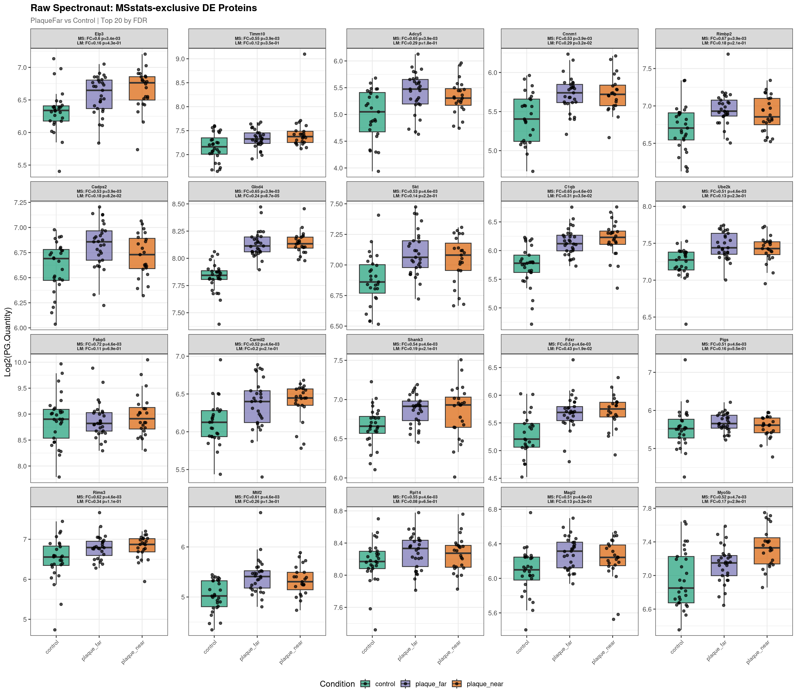
Normalised plot data rows: 1607 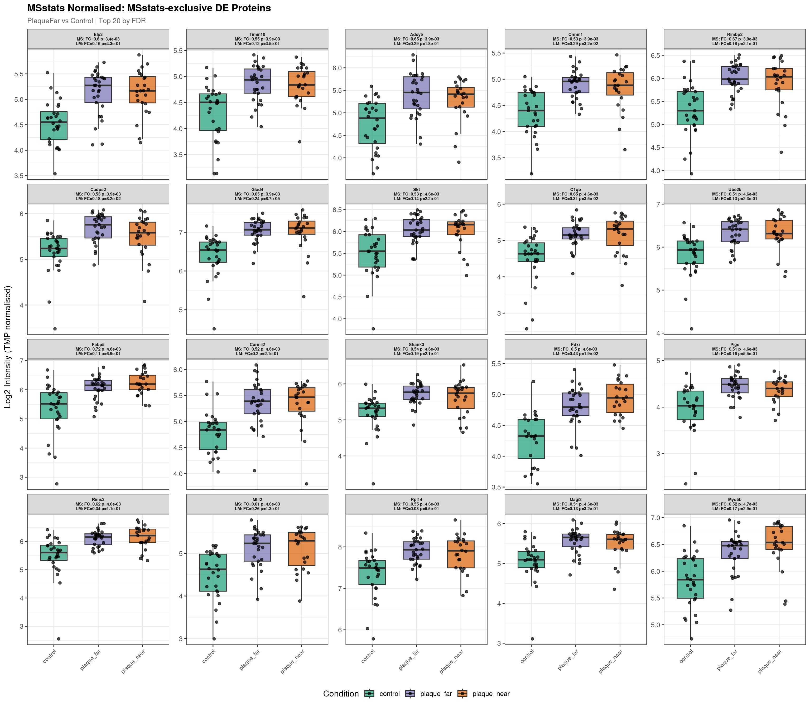
--- Plotting 20 MSstats-exclusive proteins for: PlaqueNear_vs_Control ---
Raw plot data rows: 1591 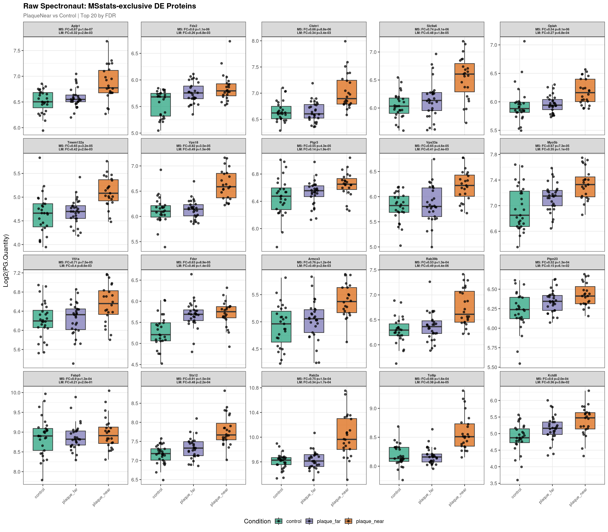
Normalised plot data rows: 1594 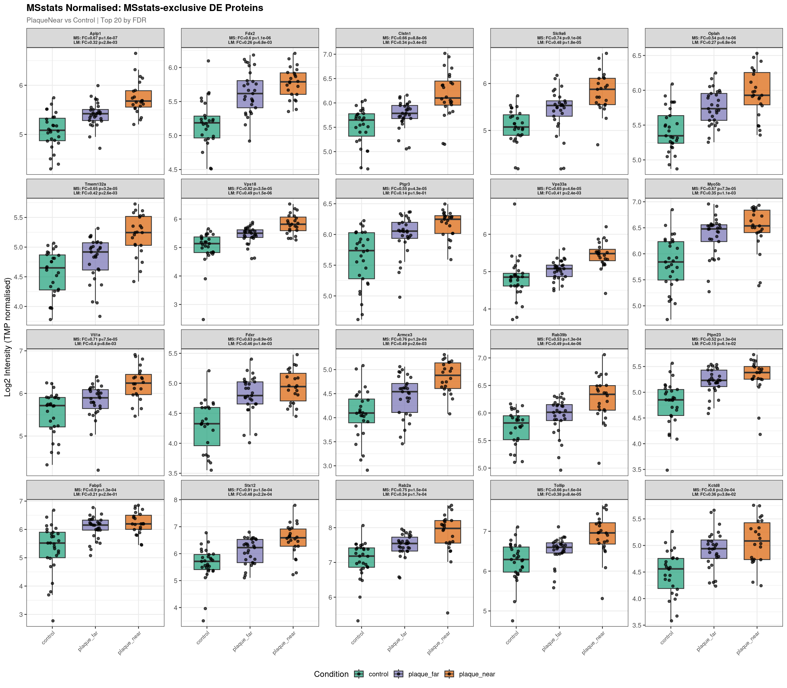
--- Plotting 8 MSstats-exclusive proteins for: PlaqueNear_vs_PlaqueFar ---
Raw plot data rows: 412 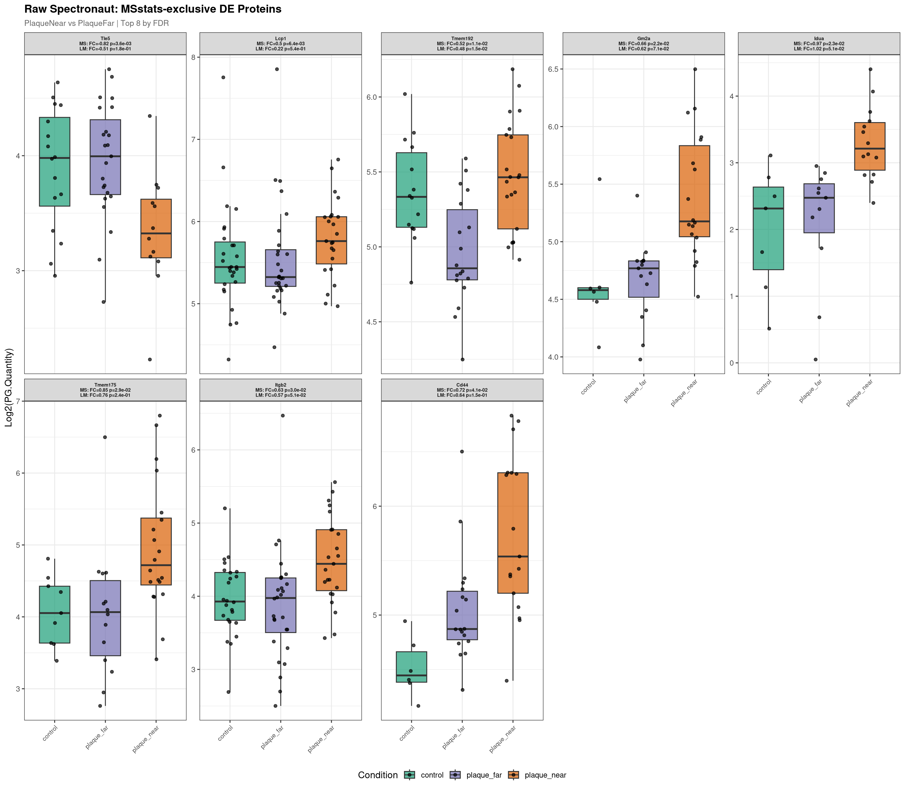
Normalised plot data rows: 406 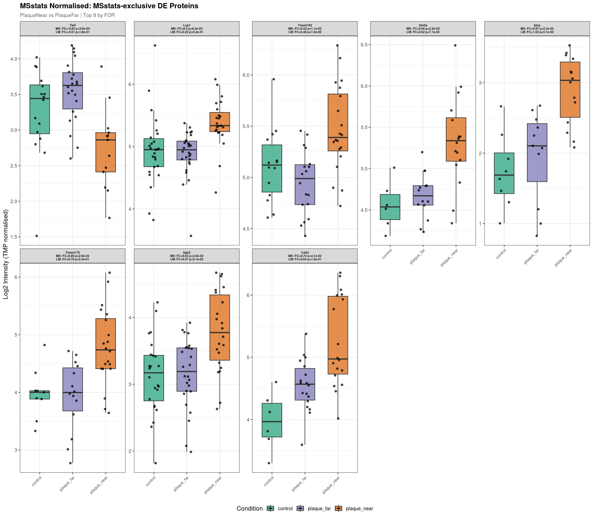
for (comp in unique(limma_exclusive$Label)) {
plot_exclusive_boxplots(
proteins_df = limma_exclusive,
spec_long_df = spec_long,
msstats_abund_df = msstats_abundance,
comparison_label = comp,
output_dir = boxplot_dir,
pipeline_label = "Limma-exclusive",
rank_by_col = "adj.pvalue_limma"
)
}
--- Plotting 3 Limma-exclusive proteins for: PlaqueFar_vs_Control ---
Raw plot data rows: 153 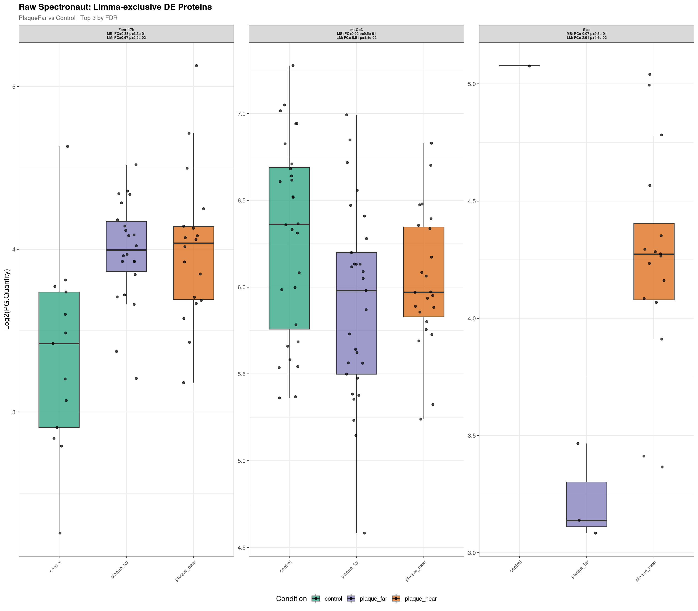
Normalised plot data rows: 146
--- Plotting 20 Limma-exclusive proteins for: PlaqueNear_vs_Control ---
Raw plot data rows: 1411 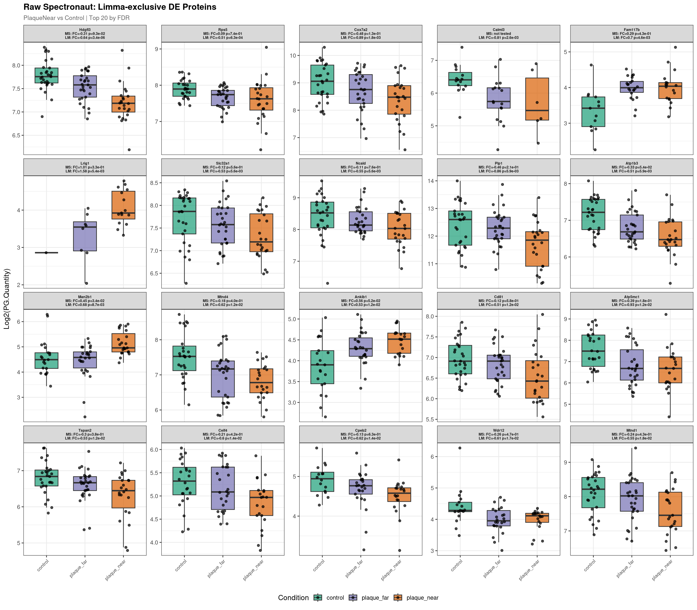
Normalised plot data rows: 1350 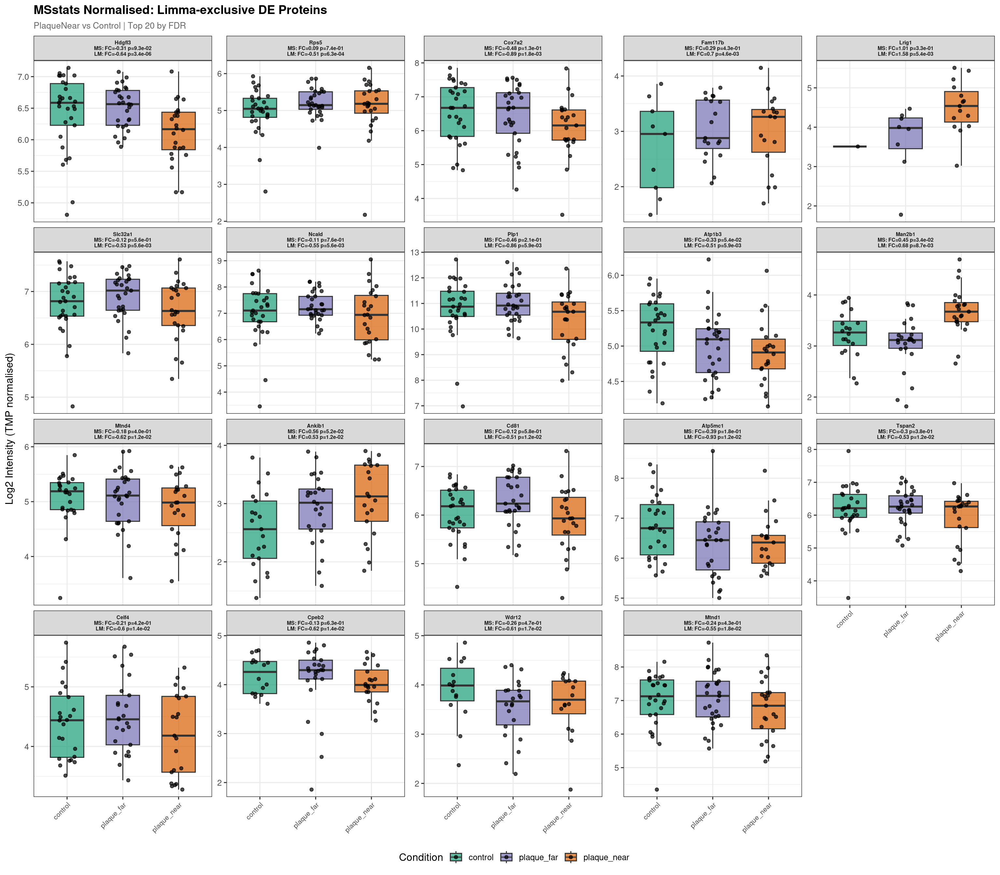
--- Plotting 20 Limma-exclusive proteins for: PlaqueNear_vs_PlaqueFar ---
Raw plot data rows: 1282 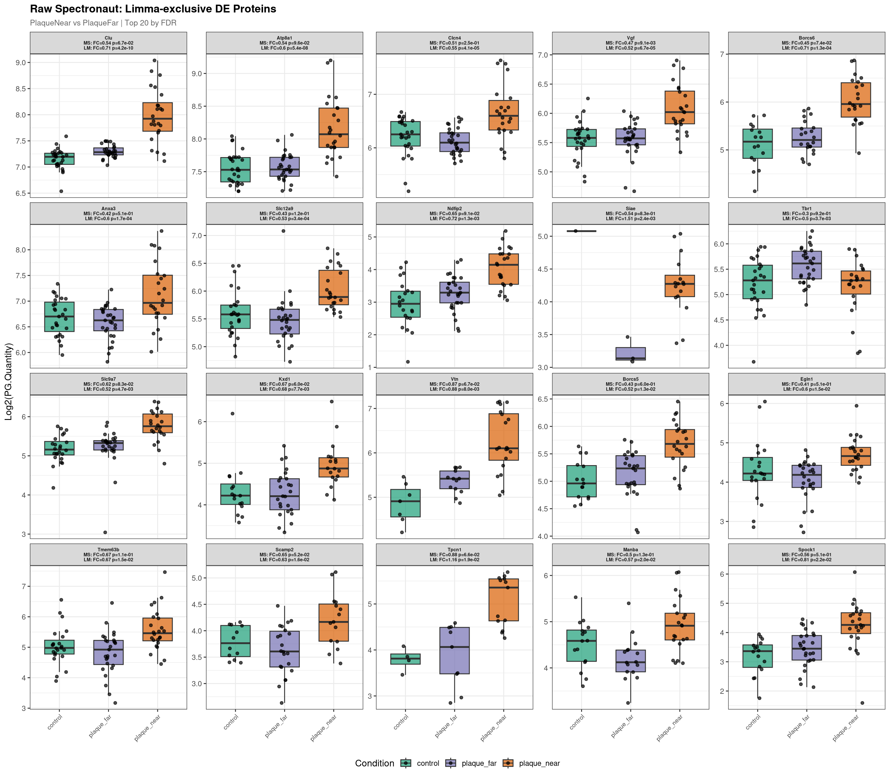
Normalised plot data rows: 1262 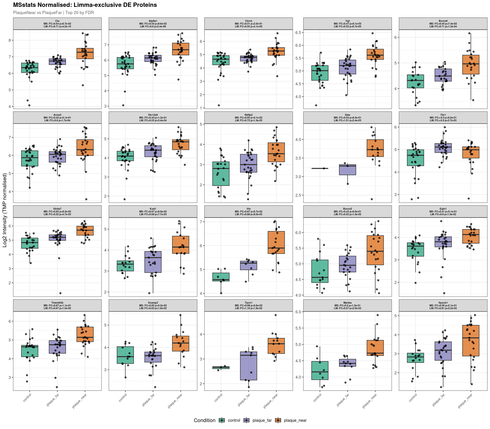
make_summary <- function(exclusive_df, calling_pipeline = "msstats") {
other_pipeline <- ifelse(calling_pipeline == "msstats", "limma", "msstats")
calling_fdr <- paste0("adj.pvalue_", calling_pipeline)
other_fdr <- paste0("adj.pvalue_", other_pipeline)
calling_fc <- paste0("log2FC_", calling_pipeline)
other_fc <- paste0("log2FC_", other_pipeline)
exclusive_df %>%
mutate(
direction = ifelse(.data[[calling_fc]] > 0, "Up", "Down"),
other_detected = ifelse(!is.na(.data[[other_fdr]]), "Yes", "No"),
other_note = case_when(
is.na(.data[[other_fdr]]) ~ "Not detected",
.data[[other_fdr]] < 0.1 ~ paste0("Trend (FDR=",
formatC(.data[[other_fdr]], format = "e", digits = 1), ")"),
TRUE ~ paste0("NS (FDR=", round(.data[[other_fdr]], 3), ")")
)
) %>%
dplyr::select(
Label, Gene, Protein, direction,
all_of(c(calling_fc, calling_fdr, other_fc, other_fdr)),
other_note
) %>%
arrange(Label, .data[[calling_fdr]])
}summary_msstats_excl <- make_summary(msstats_exclusive, "msstats")
fwrite(summary_msstats_excl, file.path(boxplot_dir, "summary_msstats_exclusive.csv"))
summary_msstats_exclsummary_limma_excl <- make_summary(limma_exclusive, "limma")
fwrite(summary_limma_excl, file.path(boxplot_dir, "summary_limma_exclusive.csv"))
summary_limma_exclThis helps distinguish proteins where MSstats genuinely disagrees from borderline cases where MSstats was close to calling significance.
limma_exclusive %>%
mutate(
msstats_category = case_when(
is.na(adj.pvalue_msstats) ~ "Not in MSstats",
adj.pvalue_msstats < 0.1 ~ "MSstats trend (FDR<0.1)",
adj.pvalue_msstats < 0.2 ~ "MSstats marginal (FDR 0.1-0.2)",
TRUE ~ "MSstats NS (FDR>0.2)"
)
) %>%
dplyr::count(Label, msstats_category) %>%
tidyr::pivot_wider(names_from = msstats_category, values_from = n, values_fill = 0) %>%
as.data.frame()cat("\nAll pipeline-exclusive boxplots saved to:", boxplot_dir, "\n")
All pipeline-exclusive boxplots saved to: /nemo/lab/destrooperb/home/shared/zanettc/millie_proteomics/results/run6/concordance/pipeline_exclusive_boxplots